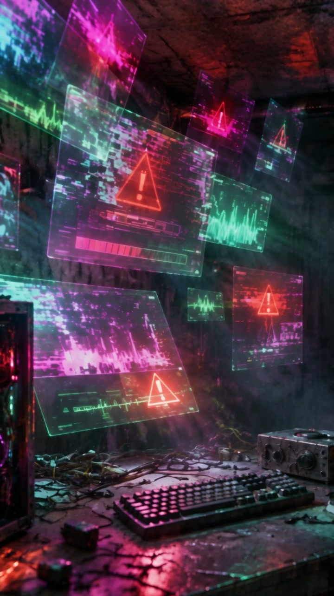
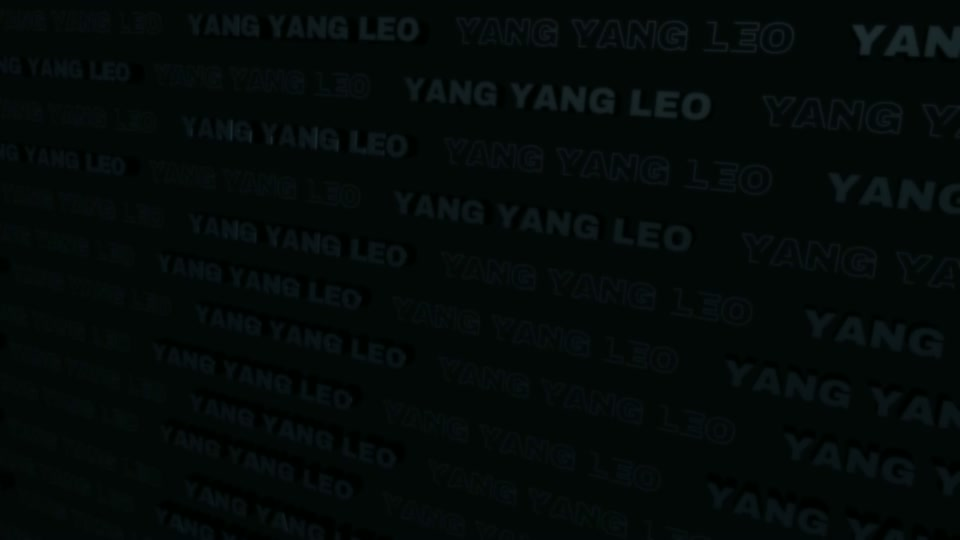

BRAND FILM / INTERNATIONAL PROJECT
Jarvis · 品牌宣传片
围绕品牌信息与应用场景展开，结合动态视觉、图形动画和剪辑包装，独立完成 6 分 36 秒整片制作落地。
创意构思全片制作交付落地
杨宗霖（Leo） / @羊羊Leo
10 年商业影视导演与视觉统筹出身，全面融合多模型 AIGC 与工程化视频工作流。
为品牌与出海团队交付商业影片、产品演示及可复用的自动化内容产线。

FRAME STUDY / 02区别于仅会写提示词的初级玩家，我拥有 10 年商业影视导演、摄影与视觉统筹经验，把 AI 作为完整的制作管线来调度——从创意分镜、模型选型、角色与场景一致性修复，到商业剪辑、配乐与成片交付全程闭环。
同时，我持续将实战沉淀为可复用的工程系统：OpenFilm + Three.js 3D 运镜、盈利型 AI 日更切片产线、以及开源跨 AI 记忆框架，适合高效异步的远程与出海团队协作。
查看我的工作方式品牌方提出制作需求，
我负责创意构思、影片制作与最终落地。
BRAND FILM / INTERNATIONAL PROJECT
围绕品牌信息与应用场景展开，结合动态视觉、图形动画和剪辑包装，独立完成 6 分 36 秒整片制作落地。
BRAND FILM / INTERNATIONAL PROJECT
将品牌理念与技术概念转为影像叙事，串联场景、图形与声音，形成完整的品牌宣传表达。
BRAND VISUAL / INTERNATIONAL PROJECT
以品牌标识、三维视觉与节奏化剪辑建立科技感，完成从创意构思到成片的制作交付。
以上境外合作项目均托管完整成片，点击即可直接播放。
从商业信息到情绪表达，
为每一种内容定制合适的 AI 镜头与生成路径。
负责约 3 分 41 秒企业品牌宣传片及产品工作流教学，融合 AI 画面、界面演示、动效字幕与后期包装，覆盖横版宣传与竖版讲解形态。
赛博叙事 / 角色与场景 / 镜头衔接
人物对话 / 参考驱动 / 复杂动作拆镜
生活情绪 / 品牌内容 / 音画节奏
作品保留原片字幕与交付画面，不编造商业转化指标。
把影视制作、多 AI 协同与工程化脚本结合，已公开发布开源工具、跑通盈利型内容产线并上线商业站点。
解决多 AI 切换时上下文丢失痛点的本地长期记忆协作系统：统一 AGENTS.md / CLAUDE.md / GEMINI.md / Cursor MDC 入口规范，配备 Windows 零依赖一键安装与 81 项自动化校验测试。
针对单场 60–80 款商品的直播回放，搭建端到端 AI 辅助产线：高潜力片段筛选、文案生成、商品挂链匹配与日更批量发布（日均约 10 条），单账号已在真实业务中验证单位经济并实现持续月度正现金流。
基于 OpenFilm v0.2.6、Three.js CSS3D 透视相机、FFmpeg 与 5 项复用剪辑方法，沉淀三态人物框、中英双语字幕、可追溯版本留档及标准分轨混音规范（人声 -3 / 音效 -9 / 配乐 -16 dBFS）。
指挥多 AI 完成数字商品独立站上线（kaihaola.com：360 SKU 目录、响应式前端与支付宝/微信/四链 USDT 自动核验）、跨境 Shopify 独立站（solissky.com）及 AI 健身 PWA 原型（SelfCode）。
05 / PERSONAL AI CONTENT IP
@羊羊Leo / @sheepsheepLeo
真人出镜分享 AI 工具实测、工程化工作流架构与项目真实踩坑，持续沉淀动态人像框、章节卡与立体文字背景等可复用视觉资产。

FROM MAKING TO SHARING.电商详情页、品牌户外广告、茶饮海报与大型活动摄影，
这是每一条 AI 影片背后的商业审美底盘。
ECOMMERCE / PRODUCT DETAIL
BEAUTY / BRAND CAMPAIGN
TEA BRAND / CAMPAIGN VISUAL
PHOTOGRAPHY / LIVE EVENTS
筹备中 / IN DEVELOPMENT
原创 AI 短剧筹备中。当前仅展示概念海报与视觉探索，成片将在完成后补充。
从目标、预算和周期出发，通过分镜关键帧与里程碑样片高效异步交付。
 BRAND / CLARITY FIRST
BRAND / CLARITY FIRST把信息组织清楚，也把画面做好。
先梳理品牌信息、产品功能和使用场景，再把 AI 画面与讲解、界面演示结合。根据预算和周期测试关键镜头，让视觉效果与信息传达相互配合。
比较效果、可控性、稳定性与成本，为项目组合合适的模型和制作流程。
拆解角色、场景、动作与运镜，选择参考驱动、分段生成或后期合成。
衔接声音、字幕和动态包装，跟进版本修改，整理可编辑工程与可复用素材。
大模型、多 Agent 协作、图像、视频、音乐与工程化后期，各司其职。
方案推演 · 脚本分镜 · 多 Agent 协同
概念图 · 风格探索 · 关键帧与交互原型
参考驱动 · 镜头生成 · 一致性控制
主题配乐 · 节奏卡点 · 标准电平混音
3D 运镜 · 模板时间线 · 自动化渲染
开源托管 · 商业独立站 · 知识流管理
承接境内外 AIGC 商业影片制作，跑通盈利型 AI 日更切片产线，沉淀 OpenFilm + Three.js 制片管线并发布开源跨 AI 记忆框架。
2024 年前期曾于深圳市美之高实业发展有限公司负责新媒体内容规划与商业摄影摄像。
负责集团活动、人物及产品摄影摄像，统一多业务板块品牌视觉呈现。
承担平面广告前中后期制作及广告短视频拍摄剪辑包装；统筹年度/月度拍摄计划与素材/器材管理。
创办并运营商业摄影及广告制作公司，直接对接客户需求，负责视觉方案、项目预算排期、剧组统筹及成品交付。
负责企业宣传片、广告片与形象片策划、脚本分镜、现场导演与后期质量把控。
支持远程全职、港新/出海团队远程及海外异步项目制合作；具备 Wise / USDC / USDT 跨境多币种结算条件。